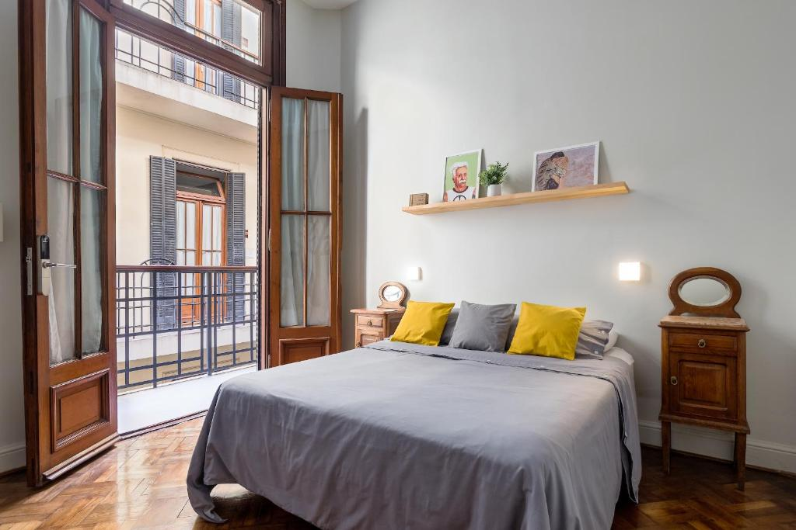
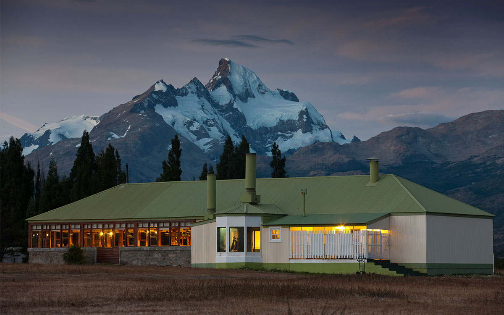
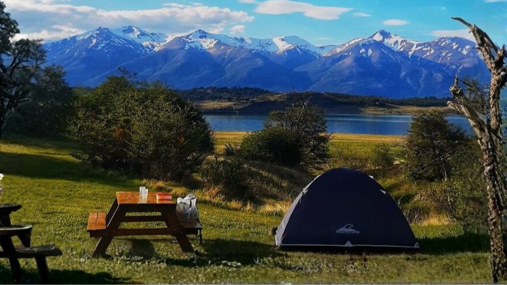

L'hebergements
Découvrez notre sélection de 4 hébergements variés pour séjourner en Argentine, des grandes villes jusqu'aux paysages sauvages de la Patagonie.
1. Faena Hotel Buenos Aires
- Type : Hôtel de luxe
- Prix par nuit : À partir de 450 €
- Services inclus : Wi-Fi gratuit, piscine extérieure, spa, petit-déjeuner, salle de sport
- Adresse : Martha Salotti 445, Puerto Madero, Buenos Aires
- Site web : Site officiel Faena Buenos Aires
- Note : 5 étoiles (4,6/5)

2. Milhouse Hostel Avenue
- Type : Auberge de jeunesse
- Prix par nuit : Entre 20 € et 65 €
- Services inclus : Wi-Fi gratuit, petit-déjeuner inclus, bar, terrasse, activités organisées
- Adresse : Avenida de Mayo 1245, Buenos Aires
- Site web : Site officiel Milhouse Hostel
- Note : 4,5/5

3. Estancia Cristina
- Type : Estancia (lodge traditionnel)
- Prix par nuit : À partir de 600 € (tout compris)
- Services inclus : Pension complète, transferts en bateau, excursions guidées, Wi-Fi
- Adresse : Parc National Los Glaciares, El Calafate, Patagonie
- Site web : Site officiel Estancia Cristina
- Note : 4,8/5

4. Camping Lago Roca
- Type : Camping
- Prix par nuit : Emplacements pour tentes, douches chaudes, sanitaires, restaurant sur place, parking
- Services inclus : Pension complète, transferts en bateau, excursions guidées, Wi-Fi
- Adresse : Parc National Tierra del Fuego, Ushuaïa
- Site web : Infos Camping Lago Roca
- Note : 4,4/5
